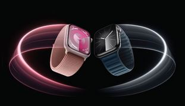
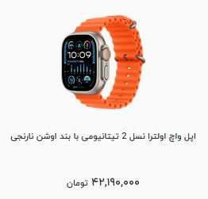
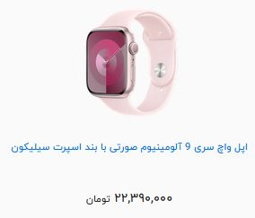
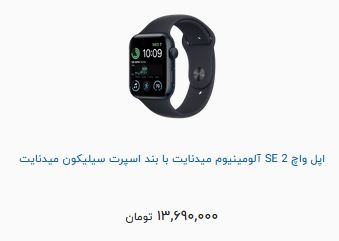

اپل واچ سری ساعت های هوشمند برند اپل میباشند که برای اولین بار در تاریخ 9 سپتامبر 2014 معرفی شد. هدف از ساخت سری ساعت های اپل واچ، تولید محصولی برای ارائه خدمات بیشتر به طرفداران تکنولوژی، ورزش و افراد عادی است. این ساعت با دارا بودن طیف وسیعی از قابلیت ها از جمله انواع اپلیکیشن های ورزشی و تناسب اندام، برنامه های مراقبت از سلامت و هشدار وضعیت اورژانسی و همچنین امکان دریافت و برقراری تماس در کنار انبوهی از قابلیت ها، به سرعت توانست به محصولی پرفروش و پرطرفدار در بازار تبدیل گردد. 
امسال نسخه جدیدی از ساعتهای هوشمند با عنوان اپل واچ اولترا 2 همراه با اپل واچ سری نهم واچها معرفی شد. به مانند سال قبل، اولترا 2 همچنان بزرگترین و مقاومترین ساعت اپل است که از مشخصات ورزشی و سلامتی فوقالعادهای نیز بهره میبرد. اپل واچ اولترا 2، دقیقا به مانند نسخه اولیه به نظر میرسد و تفاوت خاصی از نظر طراحی وجود ندارد. تنها تفاوت قابلتوجه در نسخه جدید، استفاده از مواد بازیافتی به جای غیربازیافتی است. این اقدام توسط اپل در جهت کمک به کاهش آلودگیها و مواد اضافه در محیط زیست صورت گرفته است. 
شرکت اپل مدعی شده است که این سری ساعت، محصولی بدون کربن است و از این رو دوستدار و حافظ محیط زیست است. بدنهی ساعت هوشمند سری 9 از آلومینیوم بازیافتی ساخته شده، به گفتهی سازندگان، باتری این ساعت نیز از کبالت بازیافتی ساخته شده است. همچنین بستهبندی آن هم به نسبت قبل کوچکتر شده است. مهمترین ویژگی و آپدیت سری 9، مربوط به پردازندهی دستگاه است که بعد از چند سال بهروز شده است. اپل واچ سری 9 مجهز به پردازندهی (System in Package) S9 SiP است. با این تراشه قدرت این ساعت چندین برابر شده است. 
اپل واچ se2 نسل دوم از سری محبوب و اقتصادی اپل واچ های se میباشد که در سال 2022 در دو مدل با صفحه نمایش 40 و 44 میلی متری به بازار معرفی شد. به دلیل قیمت مناسب این سری اپل واچ، بسیاری از افراد به جای هزینه برای خرید مدل های کارکرده، از این محصول استفاده میکنند. 